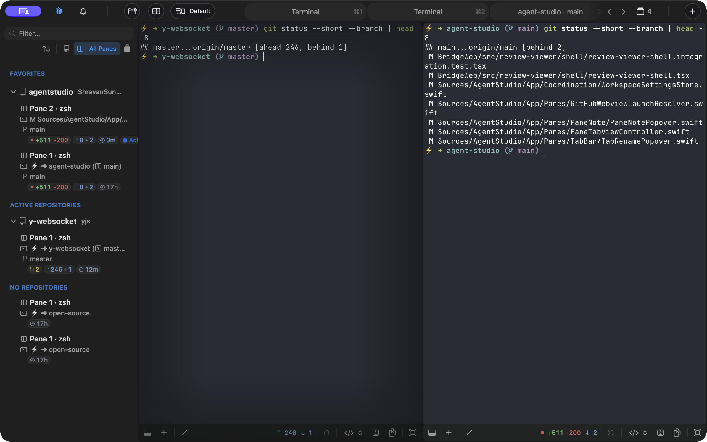
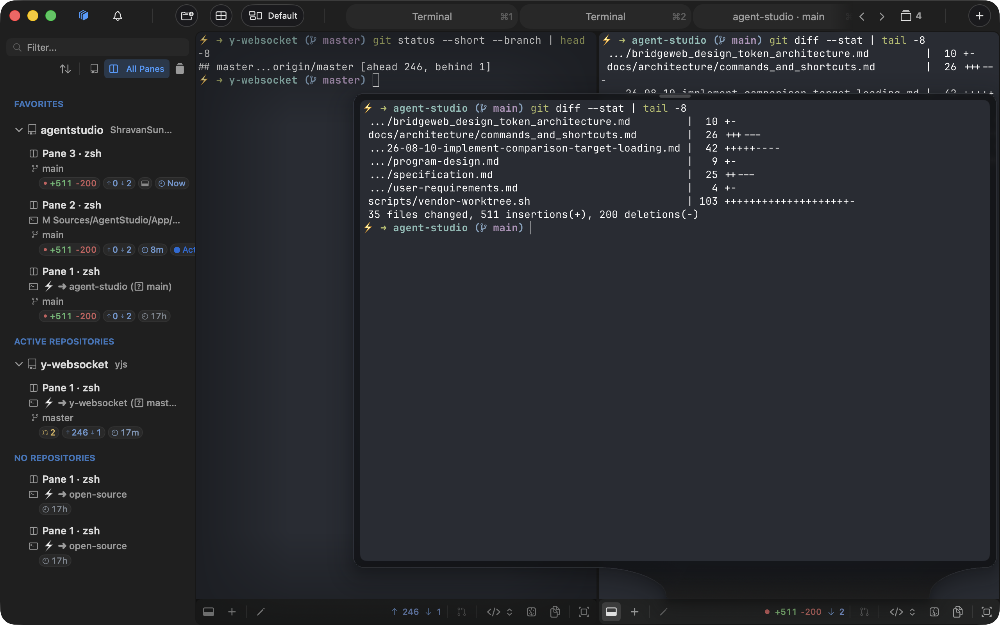
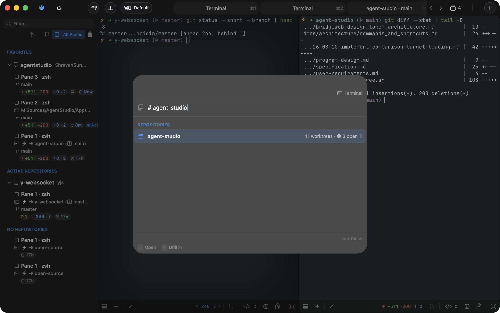
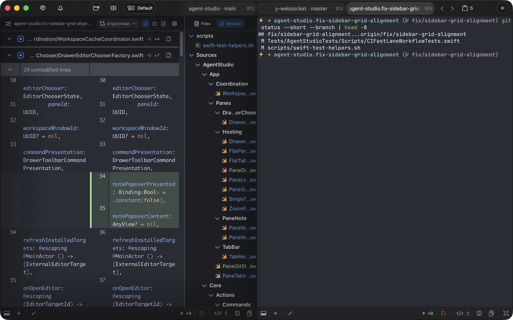
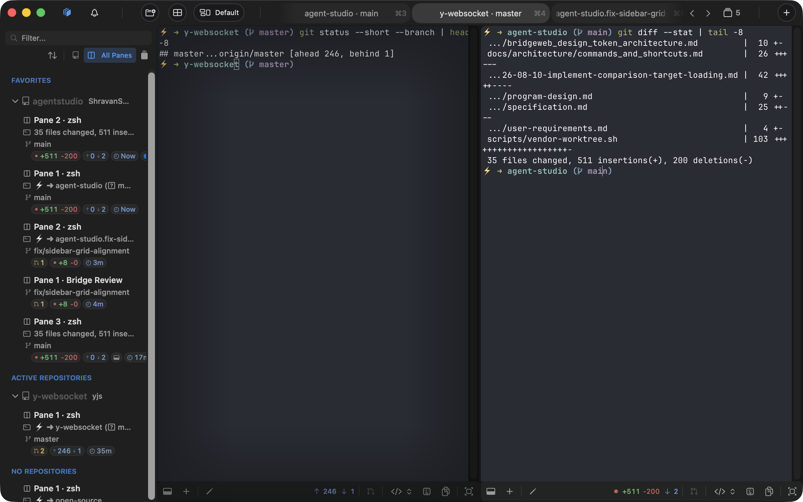
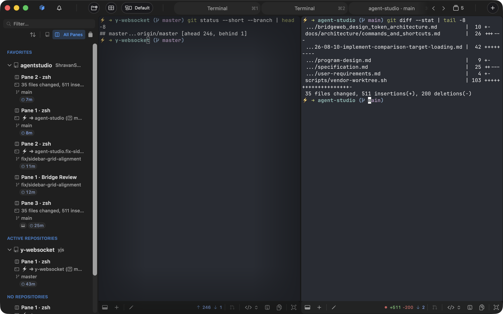

Parallel work
Full window. Sidebar-to-pane relationship remains visible.
Processed · full topology
Repositories and worktrees—not terminal tabs—organize agents, tools, source, and review.

Full window. Sidebar-to-pane relationship remains visible.
Selected agent pane and attached tools remain readable together.

Command-P, current fixture names, scopes, and background workspace.

Agent terminal, file tree, and continuous diff share one composition.

Two matching captures from the same fixture and window: before close and restored.


Each agent retains repository, worktree, branch, and working-directory context.
Shell, build, Review, and browser context remain attached to the pane that needs them.
Command-P reaches repositories, worktrees, panes, tabs, and commands.
The agent, file tree, and continuous diff stay inside the same work context.
| Master | Geometry | Primary focal region | Status |
|---|---|---|---|
| parallel-work.png | 2880×1800 sRGB | Sidebar and full pane arrangement | Processed |
| pane-drawer.png | 2880×1800 sRGB | Selected pane plus attached drawer | Processed |
| quick-find.png | 2880×1800 sRGB | Command surface plus workspace context | Processed |
| review.png | 2880×1800 sRGB | Terminal, file tree, continuous diff | Processed |
| persistent-before.png | 2880×1800 sRGB | Complete window geometry | Processed |
| persistent-restored.png | 2880×1800 sRGB | Matching internal workspace geometry | Processed |
Repositories and worktrees organize agents and their context.
Five reachable states. Parallel uses the full master; Drawer, Quick Find, and Review use locked normalized crops; Persistent stacks the complete before/restored pair.
A workspace for coding agents, repositories, worktrees, tools, and review.